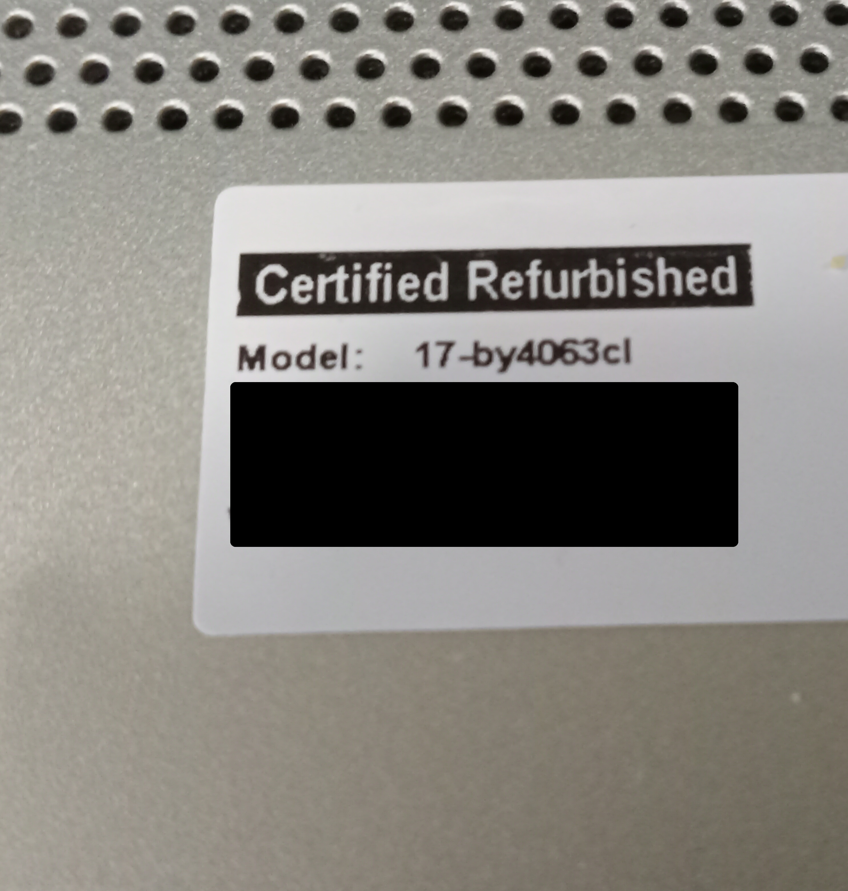

Laptop Recon Work
Planning a Repair
My husband got a refurbished computer a few years ago. I helped him pick out a cool HP laptop that he loves being on and has rad adventures on it. It’s a good computer overall, but it has severely needed some work in the past year. The case started to crack. I tried to do touch-ups with heat, JB weld, and an old credit card cut into the right size with a Dremel tool. I soon realized that I had not addressed the problem of why the plastic was cracking. I erroneously thought the plastic was weak. The issue as to why the thing is breaking down is the tension in HP’s hinges is too tight. I found other people having the same issues all over the internet. I’m on a quest as my husband needs a new case and has requested a new battery too. I need to do recon work to get the details to repair correctly this time.
These were my touch ups that did nothing. I can't even close the laptop at this point because of the hinges.
First, I backed up the hard drive before taking it apart. As shown in the picture, I back him up regularly to a Western Digital drive. Always back up your files before repairs! In general, perform regular backups. You never know when those backups might save your bacon.
So, how do you work on a delicate laptop you can’t close? Carefully, I flipped it so the monitor portion faced downward and the case part was upside down on a tv tray table jutted against my stove. I made sure to wear my antistatic wrist band too.
I took a picture of the model number as that would help me get parts later.
I had to unscrew the screws on the back. I had to get the disk drive free and remove the screws under the disk drive.

My fingers are where the two screws were. I had removed them at this point.

I then gently, with a flat head screw driver, pried the edges of the back cover free. I was greeted with this.
The first thing I noticed was the plastic around the hinges were shot. As you can see in the below pics there is plastic shrapnel.


I got the canned air out and shot the shrapnel away. I also used it to get most of the dust out of the fan. I plan to give the CPU fan a good cleaning when I'm doing the repair.

Then I looked at the battery. I unscrewed and removed it and took a bunch of pics of it.


With the pictures, I saw that the battery I needed was an HP HT03XL, and a note said I needed to replace it with L11119-855. Taking pics is always better than a Post-it. I do this in case I write down a wrong number or something.
I knew from doing homework on this repair that to determine the case, I would have to look under the battery where the touchpad is. The number on the touchpad’s sticker determines the correct case to order.

I had what I needed. I put the componets back and screwed it up. I then booted it on.

Heck yeah! It booted! I ordered the parts and am going to pull off the repair upon delivery. I made sure to get an OEM part for the battery. I always do that. The case is aftermarket. I'm going to losen and lubricate the hinges so we're not back here again. Hopefully the new plastic is tough. My screw driver to do the work was a phillips 1. I used my Star Trek one as I wanted the force to be with me. I think it was. This is going to be cool.